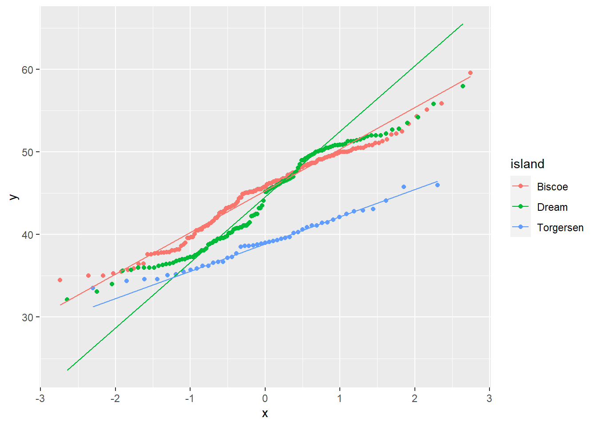
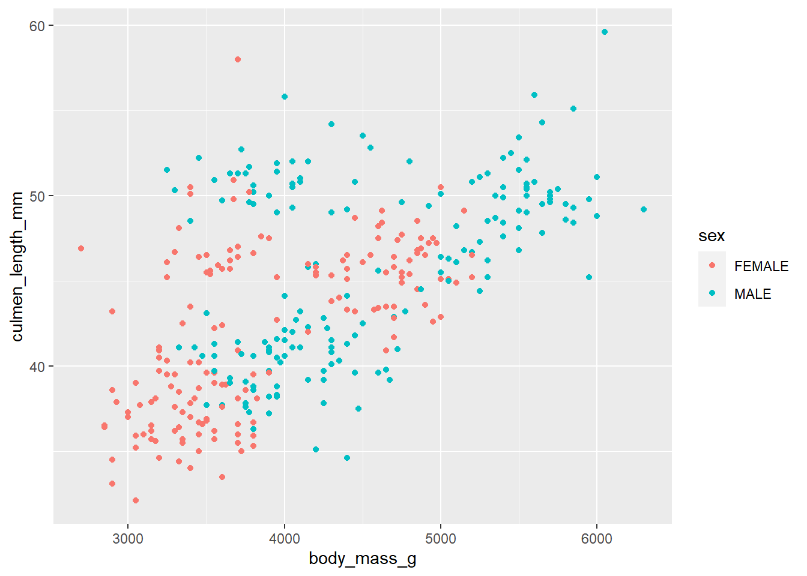
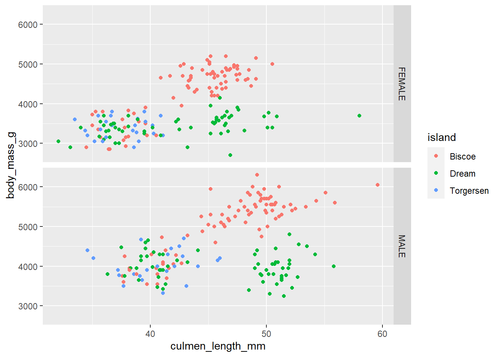

Clase5 Visualizacion con ggplot2
Miguel Tripp
2021-05-06
Last updated: 2021-05-24
Checks: 7 0
Knit directory: 2021/
This reproducible R Markdown analysis was created with workflowr (version 1.6.2). The Checks tab describes the reproducibility checks that were applied when the results were created. The Past versions tab lists the development history.
Great! Since the R Markdown file has been committed to the Git repository, you know the exact version of the code that produced these results.
Great job! The global environment was empty. Objects defined in the global environment can affect the analysis in your R Markdown file in unknown ways. For reproduciblity it’s best to always run the code in an empty environment.
The command set.seed(20210412) was run prior to running the code in the R Markdown file. Setting a seed ensures that any results that rely on randomness, e.g. subsampling or permutations, are reproducible.
Great job! Recording the operating system, R version, and package versions is critical for reproducibility.
Nice! There were no cached chunks for this analysis, so you can be confident that you successfully produced the results during this run.
Great job! Using relative paths to the files within your workflowr project makes it easier to run your code on other machines.
Great! You are using Git for version control. Tracking code development and connecting the code version to the results is critical for reproducibility.
The results in this page were generated with repository version cd72752. See the Past versions tab to see a history of the changes made to the R Markdown and HTML files.
Note that you need to be careful to ensure that all relevant files for the analysis have been committed to Git prior to generating the results (you can use wflow_publish or wflow_git_commit). workflowr only checks the R Markdown file, but you know if there are other scripts or data files that it depends on. Below is the status of the Git repository when the results were generated:
Ignored files:
Ignored: .Rhistory
Ignored: .Rproj.user/
Untracked files:
Untracked: Curso_Bioestadistica_MTripp_cuatriII.docx
Untracked: Curso_Bioestadistica_MTripp_cuatriII.pdf
Untracked: Diapositivas/
Untracked: README.html
Untracked: Resources/
Untracked: analysis/images/
Untracked: data/Consumo_oxigeno_wide.csv
Untracked: data/Data_enzimas_Experimento1.txt
Untracked: data/Data_enzimas_Experimento2.txt
Untracked: data/Data_enzimas_Experimento3.txt
Untracked: data/Data_enzimas_Experimento4.txt
Untracked: data/DownloadFestival(No Outlier).dat
Untracked: data/Festival.csv
Untracked: data/RExam.dat
Untracked: data/Rexamendat.csv
Untracked: data/Tabla1_Muestreo.txt
Untracked: data/Transcriptome_Anotacion.csv
Untracked: data/Transcriptome_DGE.csv
Untracked: data/datasets_Pokemon.csv
Untracked: data/datasets_Pokemon.xls
Untracked: data/penguins_size.csv
Untracked: data/pokemon_extended.csv
Untracked: output/Plot_all_penguins.pdf
Untracked: output/Plot_all_penguins.tiff
Untracked: output/graficos/
Note that any generated files, e.g. HTML, png, CSS, etc., are not included in this status report because it is ok for generated content to have uncommitted changes.
These are the previous versions of the repository in which changes were made to the R Markdown (analysis/Clase5_ggplot.Rmd) and HTML (docs/Clase5_ggplot.html) files. If you’ve configured a remote Git repository (see ?wflow_git_remote), click on the hyperlinks in the table below to view the files as they were in that past version.
| File | Version | Author | Date | Message |
|---|---|---|---|---|
| html | 3321935 | Miguel Tripp | 2021-05-24 | Build site. |
| html | 3d12902 | Miguel Tripp | 2021-05-16 | Build site. |
| Rmd | 5e3c88f | Miguel Tripp | 2021-05-16 | Publish the initial files for myproject |
| html | 20b3aab | Miguel Tripp | 2021-05-16 | Build site. |
| html | f20dcb1 | Miguel Tripp | 2021-05-16 | Build site. |
| html | b1ca7f3 | Miguel Tripp | 2021-05-16 | Build site. |
| Rmd | 5126d03 | Miguel Tripp | 2021-05-16 | Publish the initial files for myproject |

0.1 ¿Que es ggplot2?
ggplot es un motor gráfico basado en la gramática grafica de Wilkinson Wilkinson, 2005. Bajo este contexto, un gráfico es una serie de capas (layers) similares a una transparecia, con algo impreso en ellas, que puede ser texto, puntos, lineas, barras, imagenes de pollitos o cualquier otro tipo de representación. La imagen final, cada una de estas capas se colocan una sobre otra.

imagen de Andy Field (R)
1 geoms y aesthetics
Como se observa en la figura anterior, cada capa contiene objetos visuales (barras, puntos, text, etc) conocidos como geoms() (por objetos geométricos).
Estas geometricas también tienen propiedades estéticas (aesthetics; aes()) las cuales determinan como lucen y donde se ubican. Estos estéticos controlan la apariencia de cada uno de los elementos de la gráfica (color, forma, etsilo, etc) y puede ser especificado de manera individual para cada geometría o de manera global.
En resumen, los elementos necesarios para representar un gráfico con ggplot2son los siguientes:
- Un data frame que contiene los datos que se quieren visualizar.
- Los aesthetics, es decir, una lista de relaciones entre las variables del fichero de datos y determinados aspectos del gráfico (como por ejemplo coordenadas, formas o colores).
- Los geoms, que especifican los elementos geométricos (puntos, líneas, círculos, etc) que se van a representar.

Algunos tipos de geometrias (geoms)
2 Los datos
Para esta practica, utilizaremos la base de datos de penguis_size.csv la cual utilizamos previamente en la practica de gráficos base.
3 Funcionamiento básico
Para poder utilizar ggplot2, podemos cargar solamente la libreria ggplot2 o cargar todo el conjunto de paquetes tidyverse el cual incluye herramientas que hemos usado hasta ahora como dplyr, tidyr, readr, tibble y ggplot2.
library(tidyverse)
penguins <- read_csv("data/penguins_size.csv")
penguins <- penguins[complete.cases(penguins), ]4 Funcion ggplot()
Para crear un gráfico se usa el comando ggplot():
ggplot(data = penguins)
Al ejecutar la función, no da error pero no vemos ninguna gráfica. Esto se debe a que no hemos indicado a ggplot cuales son las coordenadas y esteticos, ni cuales son las geometrías.
Para desginar los esteticos, definimos el plano usando los datos de la longitud del culmen y la masa corporal ejecutando:
ggplot(data = penguins, aes(x = culmen_length_mm, y = body_mass_g))El argumento aes() es sinónimo de estética, ggplot2 considera que el eje X e Y de la gráfica es estético, junto con el color, el tamaño, la forma, el relleno, etc. Se puede agregar cualquier estética que se desee dentro del argumento aes(), como por ejemplo indicar los ejes X e Y, especificando las variables respectivas del conjunto de datos. La variable en función de la cual el color, tamaño, forma y trazo debe cambiar también se puede especificar aquí mismo. Debes tener en cuenta que la estética especificada aquí será heredada por todas las capas geom que se agregarán posteriormente.
Sin embargo, aún no vemos ninguna gráfica, ya que para esto es necesario indicar que tipo de geometria (geom()) de gráfica queremos utilizar.
Para crear un diagrama de dispersión es necesario agregarle la geometria geom_N(). Es importante recalcar que cada nueva capa que agreguemos al gráfico se agrega con el simbolo +
ggplot(data = penguins, aes(x = culmen_length_mm, y = body_mass_g))+
geom_point()4.1 Aesthetics
Como mencionamos, es posible agregar diferentes estéticos a la gráfica para controlar diversos aspectos como color, tamaño, forma, etc. Esto nos permite asignarle un estetico a los grupos.
por ejemplo, podemos asignarle un color diferente a cada especie
ggplot(data = penguins, aes(x = culmen_length_mm, y = body_mass_g, color = species))+
geom_point()Y asignarle una forma diferente a por sexo
ggplot(data = penguins, aes(x = culmen_length_mm, y = body_mass_g, color = species, shape = sex))+
geom_point()
o cambiar el tamaño
ggplot(data = penguins, aes(x = culmen_length_mm, y = body_mass_g, color = species, shape = sex, size = culmen_length_mm))+
geom_point()Es posible defininar los elementos estéticos (aesthetics) de manera global, lo que afectará a todas las geometrias, o se puede definir de manera indiviual por geometria
De manera que se puede expresar de esta forma:
ggplot(data = penguins, aes(x = culmen_length_mm, y = body_mass_g, color = species))+
geom_point()+
geom_smooth(method = "lm")`geom_smooth()` using formula 'y ~ x'
o de esta:
ggplot(data = penguins)+
geom_point(aes(x = culmen_length_mm, y = body_mass_g, color = species))+
geom_smooth(aes(x = culmen_length_mm, y = body_mass_g, color = species))`geom_smooth()` using method = 'loess' and formula 'y ~ x'4.2 Geometrias
Los nombres de las funciones de geometría siguen el patrón: geom_X donde X es el nombre de la geometría. Algunos ejemplos incluyen geom_point, geom_bar y geom_histogram.
A continuación repasaremos algunas de las geometrias mas comunes:
4.3 Graficar una variable continua
4.3.1 `geom_density()
c_plot <- ggplot(data= penguins, aes(x = culmen_length_mm, fill = island))
c_plot + geom_density(alpha = 0.4)4.3.2 geom_histogram()
c_plot + geom_histogram(alpha = 0.4)`stat_bin()` using `bins = 30`. Pick better value with `binwidth`.4.3.3 geom_dotplot
c_plot + geom_dotplot(alpha = 0.4)`stat_bindot()` using `bins = 30`. Pick better value with `binwidth`.4.3.4 geom_qqplot()
ggplot(data = penguins, aes(sample = culmen_length_mm, col = island))+
geom_qq() +
geom_qq_line()
4.4 Gráficas de variables discretas
4.4.1 geom_bar()
ggplot(data = penguins, aes(x = species, fill = species))+
geom_bar()ggplot(data = penguins, aes(x = species, fill = sex ))+
geom_bar()ggplot(data = penguins, aes(x = species, fill = sex ))+
geom_bar(position = "dodge")ggplot(data = penguins, aes(x = species, fill = sex ))+
geom_bar(position = "fill")
4.5 Gráficas de una variable discreta + continua
4.5.1 geom_boxplot()
ggplot(data = penguins, aes(x = species, y = culmen_length_mm, fill = sex))+
geom_boxplot()4.5.2 geom_dotplot()
ggplot(data = penguins, aes(x = species, y = culmen_length_mm, fill = sex))+
geom_dotplot(binaxis = "y", stackdir = "center", position = "dodge", binwidth = 0.75)4.5.3 geom_violin()
ggplot(data = penguins, aes(x = species, y = culmen_length_mm, fill = sex))+
geom_violin()4.5.4 jitter
ggplot(data = penguins, aes(x = species, y = culmen_length_mm, fill = sex, col = sex))+
geom_point(position = position_jitterdodge(jitter.width = 0.1), size = 2)4.6 Gráficas con una variable continua + continua
4.6.1 geom_label()
ggplot(data = penguins, aes(x = body_mass_g, y = culmen_length_mm, col = sex))+
geom_label(aes(label = island))4.6.2 geom_rug()
ggplot(data = penguins, aes(x = body_mass_g, y = culmen_length_mm, col = sex))+
geom_rug()4.6.3 geom_point()
ggplot(data = penguins, aes(x = body_mass_g, y = culmen_length_mm, col = sex))+
geom_point()
4.7 grafica de lineas
Para usar esta geometria, es necesario usar el aestetics de group:
MO <- read_csv("data/Consumo_oxigeno_wide.csv")
-- Column specification --------------------------------------------------------
cols(
individuo = col_character(),
dia1 = col_double(),
dia2 = col_double(),
dia3 = col_double(),
dia4 = col_double(),
dia5 = col_double(),
dia6 = col_double()
)MO_long <- MO %>%
pivot_longer(-individuo, names_to = "Dia", values_to = "MO")
ggplot(data = MO_long, aes(x = Dia, y = MO, group = individuo, col = individuo))+
geom_line()5 Edición de las gráficas
5.1 Titulos y etiquetas
Al igual que en las gráficas base de R, es posible editar los titulos principales y cambiar las etiquetas. Para esto, es posible utilizar las funciones ylab() , xlab() o ggtitle(), pero resulta mas practico utilizar la funcion labs()
ggplot(data = penguins, aes(x = culmen_length_mm, y = body_mass_g, col = species, shape = sex))+
geom_point()+
labs(x = "Longitud del culmen (mm)",
y = "Masa corporal (g)",
title = "Relación pico y masa",
subtitle = "Datos por especie",
caption = "Datos: Palmer Penguins",
col = "Especie",
shape = "Sexo")5.2 theme()
Es posible utilizar la función theme() para controlar parámetros gráficos independientes de los datos, tales como color de fondo, tamaño y tipo de letra, margenes, leyenda, etc.
Los parametros que se pueden controlar con themes()son abundantes, sin embargo, existen varios themes en ggplot2 que se pueden usar rapidamente para cambiar el formato:
- theme_gray()
- theme_bw()
- theme_linedraw()
- theme_light()
- theme_minimal()
- theme_classic()
Por ejemplo, podemos usat theme_minimal() el cual no contiene lineas de los ejes
ggplot(data = penguins, aes(x = culmen_length_mm, y = body_mass_g, col = species, shape = sex))+
geom_point()+
labs(x = "Longitud del culmen (mm)",
y = "Masa corporal (g)",
title = "Relación pico y masa",
subtitle = "Datos por especie",
caption = "Datos: Palmer Penguins",
col = "Especie",
shape = "Sexo")+
theme_minimal()con los otros temas, la gráfica se verian así

5.3 Ajusta el color de los elementos geometricos
Cuando los elementos geometricos no se estan separados por factores, se puede especificar el color, relleno y forma dentro de esa geometria. Por ejemplo:
ggplot(data = penguins, aes(y = culmen_length_mm, x = island))+
geom_boxplot(fill = "lightblue", col = "salmon")+
geom_point(col = "darkblue", pch = 5)Cuando tenemos datos por grupos, es posible ajustar los colores y el relleno de manera manual con:
scale_color_manual()scale_fill_manual()
los valores de color se especifican dentro del parámetro values
ggplot(data = penguins, aes(x = culmen_length_mm, y = body_mass_g, col = island, fill = island))+
geom_point()+
scale_color_manual(values = c("#999999", "#E69F00", "#56B4E9"))
colores <- c("#999999", "#E69F00", "#56B4E9")
ggplot(data = penguins, aes(x = culmen_length_mm, fill = island, col = island))+
geom_density(alpha = 0.4)+
geom_rug()+
scale_fill_manual(values = colores)+
scale_color_manual(values = colores)6 Dividir variables en paneles con facet_wrap() y facet_grid()
6.1 Dividir paneles por una variable con facet_wrap()
ggplot(penguins, aes(x = culmen_length_mm, y = body_mass_g, col = island))+
geom_point()+
#ajustar el numero de columans con ncol
facet_wrap(~ island, ncol = 1)
6.1.1 Dividir paneles por dos variabels con facet_grid()
ggplot(penguins, aes(x = culmen_length_mm, y = body_mass_g, col = island))+
geom_point()+
#ajustar el numero de columans con ncol
facet_grid(sex ~ island)
7 Unir dos o mas gráficos con patchwork
Actualmente existen diversos paquetes con los que es posible unir diverss gráficos generados con ggplot tales como:
Uno de los paquetes mas sencillos es patchwork el cual permite unir diversos gráficos usando una sintaxis simple. Por ejemplo:
# Grafico 1
library(patchwork)
fig1 <- ggplot(penguins, aes(x = culmen_length_mm, y = culmen_depth_mm, col = island))+
geom_point()
# grafico 2
fig2 <- ggplot(penguins, aes(x = culmen_length_mm, y = body_mass_g, col = island))+
geom_point()
fig3 <- ggplot(penguins, aes(x = culmen_length_mm, y = flipper_length_mm, col = island))+
geom_point()
fig1 + fig2 + fig3
plot_all <- (fig1 | fig2) / fig3
plot_all
plot_all <- plot_all + plot_layout(guides = "collect")
plot_all
plot_all & theme_bw() plot_allplot_all <- plot_all + plot_annotation(title = "Relación de la longitud del culmen",
tag_levels = "A", tag_suffix = ")")
plot_all8 Exportar una gráfica con ggsave()
La función ggsave() permite exportar gráficos en diferentes formatos, tales como PNG, TIFF, SVG y PDF
Por default, ggsave exporta el úlitmo gráfico que se haya generado
ggsave("output/Plot_all_penguins.pdf", plot = plot_all, width = 180, height = 180, units = "mm")ggsave("output/Plot_all_penguins.tiff", plot = plot_all, width = 180, height = 180, units = "mm", dpi = 300)Ejercicio1:
En una sola cadena, filtra los pokemon de 1ra y 2da generación y realiza un gráfico de barras con la frecuencia de cada tipo (Type1) separando cada generación en un panel (facet) diferente
pokemon <- readxl::read_xls("data/datasets_pokemon.xls", sheet = "pokemon")
pokemon %>%
filter(Generation %in% c(1,2)) %>%
ggplot(., aes(x = Type1))+
geom_bar() +
facet_wrap(~Generation, ncol = 1)Ejercicio 2
Con ayuda de patchwork, une dos gráficas donde se muestre la relación entre el nivel de ataque (Attack) y defensa (Defense) entre los pokemon legendario y los no legendario. Añade un titulo, cambia las etiquetas de los ejes a español y agregales letras A) y B). Guarda esta gráfica como pdf
nolegend <- ggplot(pokemon %>%
filter(Legendary == "FALSE"), aes(x = Attack, y = Defense))+
geom_point(col = "darkblue")
legendary <- ggplot(pokemon %>%
filter(Legendary == "TRUE"), aes(x = Attack, y = Defense))+
geom_point(col = "salmon")
plot_all_e2 <- legendary + nolegend & labs(x = "Ataque", y = "Defensa") & theme_classic()
plot_all_e2 <- plot_all_e2 +
plot_annotation(title = "Relación de defensa y ataque en pokemon A) legendarios y B) no legendario",tag_levels = "A", tag_suffix = ")")
plot_all_e2
ggsave("output/graficos/Ejercicio_ggplot2.pdf",plot_all_e2, width = 160, height = 120, units = "mm", scale = 1.5)Ejercicio 2
En una sola cadea, filtra a los pokemon de tipo1 agua (Water), fuego (Fire), planta (Grass) y roca (Rock); Genera un gráfico de densidad del valor de ataque especial (Sp_Atk) con un color diferente para cada tipo; grafica en paneles diferentes cada tipo y si son legendarios (gradilla de 2 x 4). Finalmente, cambia la paleta de colores y el tema del grafico a tu gusto.
colores <- viridisLite::cividis(4)
pokemon %>%
filter(Type1 %in% c("Fire", "Water", "Grass", "Rock")) %>%
ggplot(., aes(Sp_Atk, fill = Type1)) +
geom_density() +
scale_fill_manual(values = colores) +
facet_grid(Legendary ~ Type1)+
theme_light()
sessionInfo()R version 4.0.5 (2021-03-31)
Platform: x86_64-w64-mingw32/x64 (64-bit)
Running under: Windows 10 x64 (build 19041)
Matrix products: default
locale:
[1] LC_COLLATE=English_United States.1252
[2] LC_CTYPE=English_United States.1252
[3] LC_MONETARY=English_United States.1252
[4] LC_NUMERIC=C
[5] LC_TIME=English_United States.1252
attached base packages:
[1] stats graphics grDevices utils datasets methods base
other attached packages:
[1] patchwork_1.1.1 forcats_0.5.1 stringr_1.4.0 dplyr_1.0.5
[5] purrr_0.3.4 readr_1.4.0 tidyr_1.1.3 tibble_3.0.4
[9] ggplot2_3.3.3 tidyverse_1.3.1 workflowr_1.6.2
loaded via a namespace (and not attached):
[1] Rcpp_1.0.5 lattice_0.20-41 lubridate_1.7.10 ps_1.5.0
[5] assertthat_0.2.1 rprojroot_2.0.2 digest_0.6.27 utf8_1.2.1
[9] R6_2.5.0 cellranger_1.1.0 backports_1.2.1 reprex_2.0.0
[13] evaluate_0.14 httr_1.4.2 highr_0.8 pillar_1.6.0
[17] rlang_0.4.11 readxl_1.3.1 rstudioapi_0.13 whisker_0.4
[21] Matrix_1.3-2 rmarkdown_2.6 splines_4.0.5 labeling_0.4.2
[25] munsell_0.5.0 broom_0.7.6 compiler_4.0.5 httpuv_1.5.4
[29] modelr_0.1.8 xfun_0.20 pkgconfig_2.0.3 mgcv_1.8-33
[33] htmltools_0.5.1.1 tidyselect_1.1.1 fansi_0.4.2 crayon_1.4.1
[37] dbplyr_2.1.1 withr_2.3.0 later_1.1.0.1 grid_4.0.5
[41] nlme_3.1-152 jsonlite_1.7.2 gtable_0.3.0 lifecycle_1.0.0
[45] DBI_1.1.0 git2r_0.27.1 magrittr_2.0.1 scales_1.1.1
[49] cli_2.5.0 stringi_1.5.3 farver_2.0.3 fs_1.5.0
[53] promises_1.1.1 xml2_1.3.2 ellipsis_0.3.1 generics_0.1.0
[57] vctrs_0.3.8 tools_4.0.5 glue_1.4.2 hms_1.0.0
[61] yaml_2.2.1 colorspace_2.0-0 rvest_1.0.0 knitr_1.30
[65] haven_2.3.1